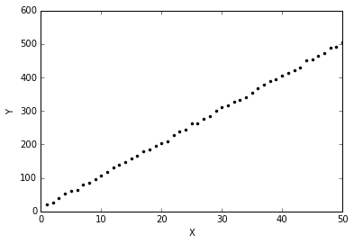

import autograd.numpy as np
import matplotlib.pyplot as plt
%matplotlib inlineLet’s say we have a prior on the linear model, i.e. we start with a known W (W_prior) and b (b_prior). Further, we say that the learnt function can be such that:
\[W = \alpha \times W_{prior} + \delta\] \[b = \beta + b_{prior} + \eta\]
Our task reduces to learn \(\alpha\), \(\beta\), \(\delta\) and \(\eta\). This can be solved as we would usually do using Gradient descent, the only difference being that we will compute the gradient wrt \(\alpha\) , \(\beta\), \(\delta\), \(\eta\). I will use autograd to compute the gradients.
In a typical model we might have 2 parameters (w and b). In our refined one, we have four- \(\alpha\) , \(\beta\), \(\delta\), \(\eta\).
Customary imports
True model
\[Y = 10 X + 6\]
Generating data
np.random.seed(0)
n_samples = 50
X = np.linspace(1, 50, n_samples)
Y = 10*X + 6 + 3*np.random.randn(n_samples)plt.plot(X, Y, 'k.')
plt.xlabel("X")
plt.ylabel("Y");
Defining priors (bad ones!)
w_prior = -2
b_prior = -2Defining the cost function in terms of alpha and beta
def cost(alpha, beta, delta, eta):
pred = np.dot(X, alpha*w_prior+delta) + b_prior + beta + eta
return np.sqrt(((pred - Y) ** 2).mean(axis=None))
from autograd import grad, multigrad
grad_cost= multigrad(cost, argnums=[0, 1, 2, 3])Gradient descent
alpha = np.random.randn()
beta = np.random.randn()
eta = np.random.randn()
delta = np.random.randn()
lr = 0.001
# We will also save the values for plotting later
w_s = [alpha*w_prior+delta]
b_s = [alpha*w_prior+delta]
for i in range(10001):
del_alpha, del_beta, del_delta, del_eta = grad_cost(alpha, beta, delta, eta)
alpha = alpha - del_alpha*lr
beta = beta - del_beta*lr
delta = delta - del_delta*lr
eta = eta - del_eta*lr
w_s.append(alpha*w_prior+delta)
b_s.append(alpha*w_prior+delta)
if i%500==0:
print "*"*20
print i
print "*"*20
print cost(alpha, beta, delta, eta), alpha*w_prior+delta, alpha*w_prior+delta********************
0
********************
277.717926153 0.756766902473 0.756766902473
********************
500
********************
5.95005440573 10.218493676 10.218493676
********************
1000
********************
5.77702829051 10.2061390906 10.2061390906
********************
1500
********************
5.60823669668 10.1939366275 10.1939366275
********************
2000
********************
5.44395500928 10.1818982949 10.1818982949
********************
2500
********************
5.28446602486 10.1700368748 10.1700368748
********************
3000
********************
5.1300568557 10.158365894 10.158365894
********************
3500
********************
4.98101499128 10.1468995681 10.1468995681
********************
4000
********************
4.83762347034 10.1356527141 10.1356527141
********************
4500
********************
4.70015516667 10.1246406278 10.1246406278
********************
5000
********************
4.56886626032 10.1138789219 10.1138789219
********************
5500
********************
4.44398905185 10.1033833225 10.1033833225
********************
6000
********************
4.32572437603 10.0931694258 10.0931694258
********************
6500
********************
4.21423397192 10.0832524173 10.0832524173
********************
7000
********************
4.10963325557 10.0736467626 10.0736467626
********************
7500
********************
4.01198500112 10.0643658801 10.0643658801
********************
8000
********************
3.92129444852 10.0554218111 10.0554218111
********************
8500
********************
3.83750630808 10.046824905 10.046824905
********************
9000
********************
3.7605040187 10.0385835381 10.0385835381
********************
9500
********************
3.69011144573 10.0307038843 10.0307038843
********************
10000
********************
3.6260969956 10.023189752 10.023189752We are able to learn a reasonably accurate W=10.07 and b=2.7.
Bonus: Animation
Making the plots look nicer.
def format_axes(ax):
for spine in ['top', 'right']:
ax.spines[spine].set_visible(False)
for spine in ['left', 'bottom']:
ax.spines[spine].set_color('grey')
ax.spines[spine].set_linewidth(0.5)
ax.xaxis.set_ticks_position('bottom')
ax.yaxis.set_ticks_position('left')
for axis in [ax.xaxis, ax.yaxis]:
axis.set_tick_params(direction='out', color='grey')
return ax# Code courtesy: http://eli.thegreenplace.net/2016/drawing-animated-gifs-with-matplotlib/
from matplotlib.animation import FuncAnimation
fig, ax = plt.subplots(figsize=(4, 3))
fig.set_tight_layout(True)
# Query the figure's on-screen size and DPI. Note that when saving the figure to
# a file, we need to provide a DPI for that separately.
print('fig size: {0} DPI, size in inches {1}'.format(
fig.get_dpi(), fig.get_size_inches()))
# Plot a scatter that persists (isn't redrawn) and the initial line.
ax.scatter(X, Y, color='grey', alpha=0.8, s=1)
# Initial line
line, = ax.plot(X, X*w_prior+b_prior, 'r-', linewidth=1)
def update(i):
label = 'Iteration {0}'.format(i)
line.set_ydata(X*w_s[i]+b_s[i])
ax.set_xlabel(label)
format_axes(ax)
return line, ax
anim = FuncAnimation(fig, update, frames=np.arange(0, 100), interval=1)
anim.save('line_prior.gif', dpi=80, writer='imagemagick')
plt.close()fig size: 72.0 DPI, size in inches [ 4. 3.]